Data visualization using Python
In this introductory-level workshop, we will learn to produce reproducible data visualization pipelines using the Python programming language and the Vega-Altair declarative visualization library.
We will work in Jupyter Notebooks and start with Python basics, to be able to read data from Excel sheets and comma-separated values (CSV) files. We will introduce the pandas library for “data wrangling” (reading, writing, sorting, and filtering of data). Finally, will learn how to produce and share reproducible plots using Vega-Altair.
Who is the course for?
Somebody starting with Python or curious about Python.
Somebody who needs to read, process, and plot data for their work or studies and would like to try it out with Python.
Persons who already use Python for this but want to learn about libraries to simplify common tasks and about how to share their workflow in a reproducible way.
Preparations
No programming langauge experience needed, we will start from zero and learn the basics together
Computer with network access
Anaconda installation (Software install instructions)
Installing the package
altairBring one of your recent plotting tasks or challenges
What is not taught?
Version control. Although super useful it is outside of this workshop.
Python outside a Jupyter Notebook.
Python sets and tuples are only mentioned.
File input/output is only used via libraries and doing “own” file-I/O is only part of optional material.
How to choose the right visualization format for the data at hand.
Python object oriented design.
Python packaging.
NumPy arrays.
Managing environments and installing Python packages.
Episodes
35 min |
|
35 min |
|
35 min |
|
45 min |
|
25 min |
|
50 min |
|
20 min |
Jupyter Notebooks
Objectives
Know what it is
Create a new notebook and save it
Open existing notebooks from the web
Be able to create text/markdown cells, code cells, images, and equations
Know when to use a Jupyter Notebook for a Python project and when perhaps not to
Instructor note
15 min discussion/demo
15 min exercise
5 min summary
[this lesson is adapted from https://coderefinery.github.io/jupyter/motivation/]
Motivation for Jupyter Notebooks
{kind=link}
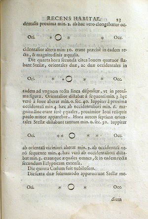
One of the first notebooks: Galileo’s drawings of Jupiter and its Medicean Stars from Sidereus Nuncius. Image courtesy of the History of Science Collections, University of Oklahoma Libraries (CC-BY).
Code, text, equations, figures, plots, etc. are interleaved, creating a computational narrative.
The name “Jupyter” derives from Julia+Python+R, but today Jupyter kernels exist for dozens of programming languages.
Our first notebook
Exercise Jupyter-1: Create a notebook (15 min)
Open a new notebook (on Windows: open Anaconda Navigator, then launch JupyterLab; on macOS/Linux: you can open JupyterLab from the terminal by typing
jupyter-lab)Rename the notebook
Create a markdown cell with a section title, a short text, an image, and an equation
# Title of my notebook Some text.  $E = mc^2$
Most important shortcut: Shift + Enter, to run current cell and create a new one below.
Create a code cell where you define the
arithmetic_meanfunction:def arithmetic_mean(sequence): s = 0.0 for element in sequence: s += element n = len(sequence) return s / n
In a different cell, call the function:
arithmetic_mean([1, 2, 3, 4, 5])
Run all cells.
Save the notebook.
Use cases for notebooks
Really good for linear workflows (e.g. read data, filter data, do some statistics, plot the results)
Experimenting with new ideas, testing new libraries/databases
As an interactive development environment for code, data analysis, and visualization
Keeping track of interactive sessions, like a digital lab notebook
Supplementary information with published articles
Good practices
Run all cells before sharing/saving to verify that the results you see on your computer were not due to cells being run out of order.
Python basics
Objectives
Knowing what types exist
Knowing the most common data structures: lists, tuples, dictionaries, and sets
Creating and using functions
Knowing what a library is
Knowing what
importdoesBeing able to “read” an error
Instructor note
20 min talking/type-along
15 min exercise
there are optional exercises for later/ homework
Motivation for Python
Free
Huge ecosystem of examples, libraries, and tools
Relatively easy to read and understand
Similar in scope and use cases to R, Julia, and Matlab
Basic types
# int
num_measurements = 13
# float
some_fraction = 0.25
# string
name = "Bruce Wayne"
# bool
value_is_missing = False
skip_verification = True
# we can print values
print(name)
# and we can do arithmetics with ints and floats
print(5 * num_measurements)
print(1.0 - some_fraction)
Python is dynamically typed: We do not have to define that an integer is an
int, we can use it this way and Python will infer it.However, one can use type annotations in Python (see also mypy).
Now you also know that we can add
# commentsto our code.
Data structures for collections: lists, dictionaries, sets, and tuples
# lists are good when order is important
scores = [13, 5, 2, 3, 4, 3]
# first element
print(scores[0])
# we can add items to lists
scores.append(4)
# lists can be sorted
scores.sort()
print(scores)
# dictionaries are useful if you want to look up
# elements in a collection by something else than position
experiment = {"location": "Svalbard", "date": "2021-03-23", "num_measurements": 23}
print(experiment["date"])
# we can add items to dictionaries
experiment["instrument"] = "a particular brand"
print(experiment)
if "instrument" in experiment:
print("yes, the dictionary 'experiment' contains the key 'instrument'")
else:
print("no, it doesn't")
Listsare good when order is important, and it needs to be changedDictionariesare mappings key→value.Setsare useful for unordered collections where you want to make sure that there are no repetitions.There are also
tuplesthat are similar to lists but their items cannot be modified.
You can put:
dictionaries inside lists
lists inside dictionaries
dictionaries inside dictionaries
lists inside lists
tuples inside …
…
Iterating over collections
Often we wish to iterate over collections.
Iterating over a list:
scores = [13, 5, 2, 3, 4, 3]
for score in scores:
print(score)
# example with f-strings
for score in scores:
print(f"the score is {score}")
We don’t have to call the variable inside the for-loop “score”. This is up to us. We can do this instead (but is this more understandable for humans?):
scores = [13, 5, 2, 3, 4, 3]
for x in scores:
print(x)
Iterating over a dictionary:
experiment = {"location": "Svalbard", "date": "2021-03-23", "num_measurements": 23}
for key in experiment:
print(experiment[key])
# another way to iterate
for (key, value) in experiment.items():
print(key, value)
Functions
Functions are like reusable recipes. They receive ingredients (input arguments), then inside the function we do/compute something with these arguments, and they return a result.
def add(a, b): result = a + b return result
Together we write a function which sums all elements in a list:
def add_all_elements(sequence): """ This function adds all elements. This here is a docstring, a documentation string for a function. """ s = 0.0 for element in sequence: s += element return s measurements = [1, 2, 3, 4, 5, 6, 7, 8, 9, 10] print(add_all_elements(measurements))
We reuse this function to write a function which computes the mean:
def arithmetic_mean(sequence): # we are reusing add_all_elements written above s = add_all_elements(sequence) n = len(sequence) return s / n measurements = [1, 2, 3, 4, 5, 6, 7, 8, 9, 10] mean = arithmetic_mean(measurements) print(mean)
Functions can call other functions. Functions can also get other functions as input arguments.
Functions can return more than one thing:
def uppercase_and_lowercase(text): u = text.upper() l = text.lower() return u, l some_text = "SequenceOfCharacters" uppercased_text, lowercased_text = uppercase_and_lowercase(some_text) print(uppercased_text) print(lowercased_text)
Why functions? Less repetition but also simplify reading and understanding code.
Reading error messages
Here we introduce a mistake and we together try to make sense of the traceback:
{kind=link}
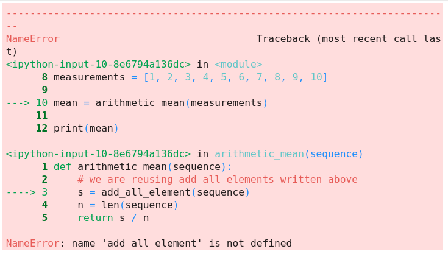
Example error traceback. Can you explain the error?
Exercises
Exercise Python-1A: create a function that computes the standard deviation (15 min)
Arithmetic mean: $\bar{x} = \frac{1}{N} \sum_{i=1}^N x_i$
Standard deviation: $\sqrt{ \frac{1}{N} \sum_{i=1}^N (x_i - \bar{x})^2 }$
In other words the computation is similar but we need to sum over squares of differences and at the end take a square root.
Take this as a starting point:
# we have written this one together previously def arithmetic_mean(sequence): s = 0.0 for element in sequence: s += element n = len(sequence) return s / n def standard_deviation(sequence): # here we need to do some work: # mean = ? # s = ? n = len(sequence) return (s / n) ** 0.5
If this is the input list:
measurements = [1, 2, 3, 4, 5, 6, 7, 8, 9, 10]
Then the result would be: 2.872…
Solution 1 (longer but hopefully easier to understand)
# we have written this one together previously
def arithmetic_mean(sequence):
s = 0.0
for element in sequence:
s += element
n = len(sequence)
return s / n
# notice how this function reuses the other
def standard_deviation(sequence):
mean = arithmetic_mean(sequence)
s = 0.0
for element in sequence:
s += (element - mean) ** 2
n = len(sequence)
return (s / n) ** 0.5
Solution 2 (more compact)
def arithmetic_mean(sequence):
return sum(sequence) / len(sequence)
def standard_deviation(sequence):
mean = arithmetic_mean(sequence)
s = sum([(x - mean) ** 2 for x in sequence])
n = len(sequence)
return (s / n) ** 0.5
Exercise Python-1B: working with a dictionary
We have this dictionary as a starting point:
grades = {"Alice": 80, "Bob": 95}
Add the grades of few more (fictious) persons to this dictionary.
Print the entire dictionary.
What happens when you add a name which already exists (with a different grade)?
Print the grade for one particular person only.
What happens when you try to print the result for a person that wasn’t there?
Try also these:
print(grades.keys()) print(grades.values()) print(grades.items())
Solution
We can add more people like this:
grades["Craig"] = 56
grades["Dave"] = 28
grades["Eve"] = 75
Print the entire dictionary with:
print(grades)
We get:
{'Alice': 80, 'Bob': 95, 'Craig': 56, 'Dave': 28, 'Eve': 75}
Adding an entry which already exists updates the entry (please try it).
Printing the result for one particular person:
print(grades["Eve"])
Printing the result for a person which does not exists, gives a KeyError.
The outputs of these three:
print(grades.keys())
print(grades.values())
print(grades.items())
… are either the only the keys or only the values, or in the case of items(),
key-value pairs (tuples):
dict_keys(['Alice', 'Bob', 'Craig', 'Dave', 'Eve'])
dict_values([80, 95, 56, 28, 75])
dict_items([('Alice', 80), ('Bob', 95), ('Craig', 56), ('Dave', 28), ('Eve', 75)])
Libraries
We can look at libraries as collections of functions. We can import the libraries/modules and then reuse the functions defined inside these libraries.
Try this:
import numpy
measurements = [1, 2, 3, 4, 5, 6, 7, 8, 9, 10]
result = numpy.std(measurements)
print(result)
This means numpy contains a function called std which apparently computes the standard deviation
(check also its documentation).
Often you see this in tutorials (the module is imported and renamed to a shortcut):
import numpy as np
result = np.std([1, 2, 3, 4, 5, 6, 7, 8, 9, 10])
We will later learn how to create own modules to collect own functions for reuse.
Optional exercises
These exercises use if-statements.
Optional exercise/ homework Python-2: removing duplicates
This list contains duplicates:
measurements = [2, 2, 1, 17, 3, 3, 2, 1, 13, 14, 17, 14, 4]
Write a function which removes duplicates from the list and sorts the list. In this case it would produce:
[1, 2, 3, 4, 13, 14, 17]
Solution 1 (longer but hopefully easier to understand)
The function sorted sorts a sequence but it creates a new sequence.
This is useful if you need a sorted result without changing the original sequence.
We could have achieved the same result with list.sort().
def remove_duplicates_and_sort(sequence):
new_sequence = []
for element in sequence:
if element not in new_sequence:
new_sequence.append(element)
return sorted(new_sequence)
Solution 2 (more compact)
Converting to set removes duplicates. Then we convert back to list:
def remove_duplicates_and_sort(sequence):
new_sequence = list(set(sequence))
return sorted(new_sequence)
Optional exercise/ homework Python-3: counting how often an item appears
Back to our list with duplicates:
measurements = [2, 2, 1, 17, 3, 3, 2, 1, 13, 14, 17, 14, 4]
Your goal is to write a function which will return a dictionary mapping each number to how often it appears. In this case it would produce:
{2: 3, 1: 2, 17: 2, 3: 2, 13: 1, 14: 2, 4: 1}
Solution 1 (longer but hopefully easier to understand)
def how_often(sequence):
counts = {}
for element in sequence:
if element in counts:
counts[element] += 1
else:
counts[element] = 1
return counts
Solution 2 (more compact)
The point of this solution is to show that for such common operations, ready-made functions and objects already exist and is is worth to check out the documentation about the collections module.
from collections import Counter, defaultdict
def how_often_alternative1(sequence):
return dict(Counter(sequence))
def how_often_alternative2(sequence):
counts = defaultdict(int)
for element in sequence:
counts[element] += 1
return dict(counts)
Great resources to learn more
Real Python Tutorials (great for beginners)
The Python Tutorial (great for beginners)
The Hitchhiker’s Guide to Python! (intermediate level)
Generating our first plot
Objectives
Be able to create simple plots with Vega-Altair and tweak them
Know how to look for help
Know that other tools exist
We will build up this notebook (spoiler alert!)
Instructor note
25 min talking/type-along
[this lesson is adapted from https://aaltoscicomp.github.io/python-for-scicomp/data-visualization/]
Repeatability/reproducibility
From Claus O. Wilke: “Fundamentals of Data Visualization”:
One thing I have learned over the years is that automation is your friend. I think figures should be autogenerated as part of the data analysis pipeline (which should also be automated), and they should come out of the pipeline ready to be sent to the printer, no manual post-processing needed.
Try to minimize manual post-processing. This could bite you when you need to regenerate 50 figures one day before submission deadline or regenerate a set of figures after the person who created them left the group.
There is not the one perfect language and not the one perfect library for everything.
Within Python, many libraries exist:
Vega-Altair: declarative visualization, statistics built in
Matplotlib: probably the most standard and most widely used
Seaborn: high-level interface to Matplotlib, statistical functions built in
Plotly: interactive graphs
Bokeh: also here good for interactivity
plotnine: implementation of a grammar of graphics in Python, it is based on ggplot2
ggplot: R users will be more at home
PyNGL: used in the weather forecast community
K3D: Jupyter Notebook extension for 3D visualization
…
Two main families of libraries: procedural (e.g. Matplotlib) and declarative.
Why are we starting with Vega-Altair?
Concise and powerful
Allows us to focus on the data visualization part and get started without too much Python knowledge
The way it combines visual channels with data columns can feel intuitive
Easy to change figures
Good documentation
Open source
Makes it easy to save figures in a number of formats
Interfaces very nicely with pandas
Easy to save interactive visualizations to be used in websites
Loading and plotting a dataset
In this lesson will work with one of the Gapminder datasets.
Let us together read and plot the data and then we explain what is happening and we will improve the figure together. First we read and inspect the data:
# import necessary libraries
import altair as alt
import pandas as pd
# read the data
url_prefix = "https://raw.githubusercontent.com/plotly/datasets/master/"
data = pd.read_csv(url_prefix + "gapminder_with_codes.csv")
# print overview of the dataset
data
With very few lines we can get the first plot:
alt.Chart(data).mark_point().encode(
x="gdpPercap",
y="lifeExp",
)

First raw plot with all countries and all years.
Observe how we connect (encode) visual channels to data columns:
x-coordinate with “gdpPercap”
y-coordinate with “lifeExp”
The following code would have the same effect but the above version might be easier to read:
alt.Chart(data).mark_point().encode(x="gdpPercap", y="lifeExp")
Let us pause and explain the code
altis a short-hand foraltairwhich we imported on top of the notebookChart()is a function defined insidealtairwhich takes the data as argumentmark_point()is a function that produces scatter plotsencode()is a function which encodes data columns to visual channels
Filtering data directly in Vega-Altair
In Vega-Altair we can chain functions. Let us add two more:
alt.Chart(data).mark_point().encode(
x="gdpPercap",
y="lifeExp",
).transform_filter(alt.datum.year == 2007).interactive()
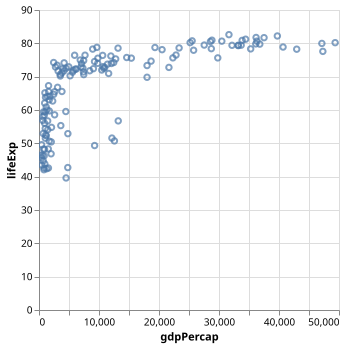
Now we only keep the year 2007.
Using color as additional channel
A very neat feature of Vega-Altair is that it is easy to add and modify visual channels. Let us try to add one more so that we do something with the “continent” data column:
alt.Chart(data).mark_point().encode(
x="gdpPercap",
y="lifeExp",
color="continent",
).transform_filter(alt.datum.year == 2007).interactive()
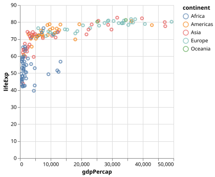
Using different colors for different continents.
Changing to log scale
For this data set we will get a better insight when switching the x-axis from linear to log scale (we changed two lines to show both the “method syntax” and the “attribute syntax”):
alt.Chart(data).mark_point().encode(
x=alt.X("gdpPercap").scale(type="log"),
y=alt.Y("lifeExp"),
color="continent",
).transform_filter(alt.datum.year == 2007).interactive()

Changing the x axis to log scale.
Improving axis titles
alt.Chart(data).mark_point().encode(
x=alt.X("gdpPercap").scale(type="log").title("GDP per capita (PPP dollars)"),
y=alt.Y("lifeExp").title("Life expectancy (years)"),
color="continent",
).transform_filter(alt.datum.year == 2007).interactive()

Improving the axis titles.
Faceted charts
To see what faceted charts are and how easy it is to do this, add the following line:
alt.Chart(data).mark_point().encode(
x=alt.X("gdpPercap").scale(type="log").title("GDP per capita (PPP dollars)"),
y=alt.Y("lifeExp").title("Life expectancy (years)"),
color="continent",
row="continent",
).transform_filter(alt.datum.year == 2007).interactive()
Guess what happens when you change row="continent" to column="continent"?
Changing from points to circles
Let us add one more visual channel, mapping size of the circle to the population size of a country:
alt.Chart(data).mark_circle().encode(
x=alt.X("gdpPercap").scale(type="log").title("GDP per capita (PPP dollars)"),
y=alt.Y("lifeExp").title("Life expectancy (years)"),
color="continent",
size="pop",
).transform_filter(alt.datum.year == 2007).interactive()
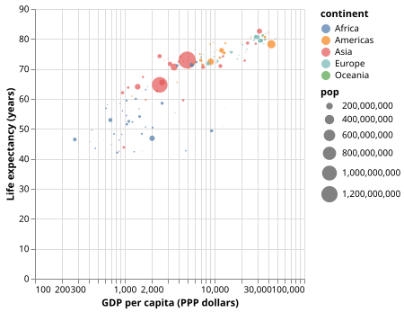
Circle sizes are proportional to population sizes.
Where to go from here?
In few steps and few lines of code we have achieved a lot!
These plots are perhaps not publication quality yet but we will learn how to customize and improve in Customizing plots.
Keypoints
Avoid manual post-processing, try to script all steps.
Browse a number of example galleries to help you choose the library that fits best your work/style.
Figures for presentation slides and figures for manuscripts have different requirements. More about that later.
Reading and slicing data with pandas
Objectives
Knowing that pandas is a popular library for handling tabular data
Learning some basic usage of pandas dataframes
Reading data with pandas from disk or a web resource
Get a feeling for when pandas is useful and know where to find more information
We will build up this notebook (spoiler alert!)
Instructor note
30 min talking/demo
15 min exercise
[this lesson is adapted from https://aaltoscicomp.github.io/python-for-scicomp/pandas/]
Use case
Pandas dataframes are a great data structure for tabular data and tabular data turns out to be a great input format for data visualization libraries.
The pandas library provides dataframes, and functions for reading data into dataframes and for analyzing, filtering, and manipulating data in very compact form.
The name is derived from the term “panel data”.
Reading data into a dataframe
Pandas can read from and write to a large set of formats (overview of input/output functions and formats). We will load a CSV file directly from the web. Instead of using a web URL we could use a local file name instead.
We will experiment with some example weather data obtained from Norsk KlimaServiceSenter, Meteorologisk institutt (MET) (CC BY 4.0).
We can try this together in a notebook:
import pandas as pd
url_prefix = "https://raw.githubusercontent.com/coderefinery/data-visualization-python/main/data/"
data = pd.read_csv(url_prefix + "tromso-daily.csv")
data
What is in a dataframe?

A pandas dataframe object is composed of rows and columns.
Let us explore these together in the notebook (run these in separate cells):
# import the pandas library
import pandas as pd
# read the dataset
url_prefix = "https://raw.githubusercontent.com/coderefinery/data-visualization-python/main/data/"
data = pd.read_csv(url_prefix + "tromso-daily.csv")
# print an overview of the dataset
data
# print the first 5 rows
data.head()
# print the last 5 rows
data.tail()
# print all column titles - no parentheses here
data.columns
# show which data types were detected
data.dtypes
# print table dimensions - no parentheses here
data.shape
# print one column
data["max temperature"]
# get some statistics
data["max temperature"].describe()
# what was the maximum temperature?
data["max temperature"].max()
# print all rows where max temperature was above 20
data[data["max temperature"] > 20.0]
Combining dataframes
Using pandas we can merge, join, concatenate, and compare dataframes, see https://pandas.pydata.org/pandas-docs/stable/user_guide/merging.html.
Let us try to concatenate two dataframes: one for Tromsø weather data (we will now load monthly values) and one for Oslo:
# we don't need to import again but just in case you started here
import pandas as pd
url_prefix = "https://raw.githubusercontent.com/coderefinery/data-visualization-python/main/data/"
data_tromso = pd.read_csv(url_prefix + "tromso-monthly.csv")
data_oslo = pd.read_csv(url_prefix + "oslo-monthly.csv")
data = pd.concat([data_tromso, data_oslo], axis=0)
# let us print the combined result
data
Data cleaning
Before plotting the data, there is a problem which we may not see yet: Dates are not in a standard date format (YYYY-MM-DD). We can fix this:
# replace mm.yyyy to date format
data["date"] = pd.to_datetime(list(data["date"]), format="%m.%Y")
With pandas it is possible to do a lot more (adjusting missing values, fixing inconsistencies, changing format).
Plotting the data
Now let’s plot the data. We will start with a plot that is not optimal and then we will explore and improve a bit as we go:
import altair as alt
alt.Chart(data).mark_bar().encode(
x="date",
y="precipitation",
color="name",
)

Monthly precipitation for the cities Oslo and Tromsø over the course of a year.
Observe how we connect (encode) visual channels to data columns:
x-coordinate with “date”
y-coordinate with “precipitation”
color with “name” (name of weather station; city)
Let us improve the plot with a one-line change:
alt.Chart(data).mark_bar().encode(
x="date",
y="precipitation",
color="name",
column="name",
)
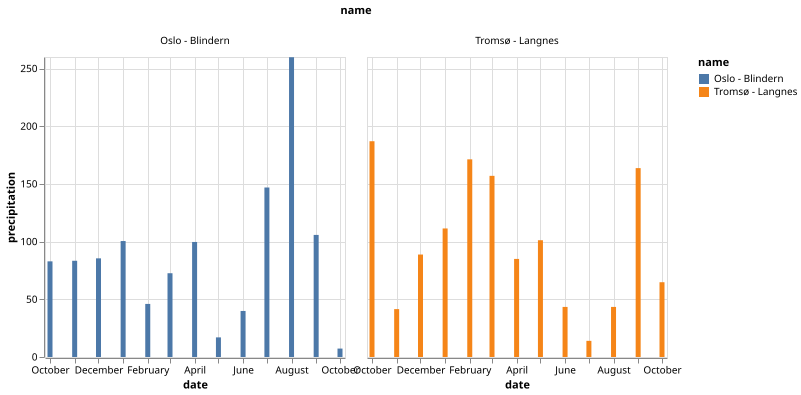
Monthly precipitation for the cities Oslo and Tromsø over the course of a year with with both cities plotted side by side.
This is not publication-quality yet but a really good start! In a later episode we will discuss how to beautify plots but this is good enough now for a quick data exploration.
Let us try one more example where we can nicely see how Altair is able to map visual channels to data columns:
alt.Chart(data).mark_area(opacity=0.5).encode(
x="date",
y="max temperature",
y2="min temperature",
color="name",
)
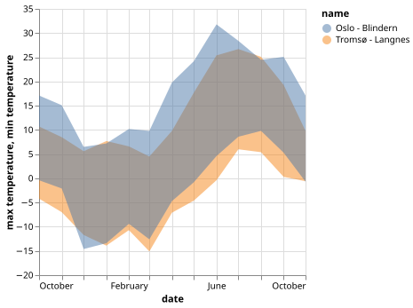
Monthly temperature ranges for two cities in Norway.
Exercise: Arranging plots in columns and rows
Pandas-1: Columns and rows
Instead of plotting the precipitations side by side, try to arrange the two plots one above the other.
In the precitipation plot, instead of
column="name"trycolumn="date"and compare the two results. Don’t worry too much about the labels and annotations. They can be improved.Modify the temperature range plot to have the two cities side by side, instead of both in one plot.
Using visual channels
Now we will try to plot the daily data. We first read and concatenate two datasets:
url_prefix = "https://raw.githubusercontent.com/coderefinery/data-visualization-python/main/data/"
data_tromso = pd.read_csv(url_prefix + "tromso-daily.csv")
data_oslo = pd.read_csv(url_prefix + "oslo-daily.csv")
data = pd.concat([data_tromso, data_oslo], axis=0)
We adjust the data a bit:
# replace dd.mm.yyyy to date format
data["date"] = pd.to_datetime(list(data["date"]), format="%d.%m.%Y")
# we are here only interested in the range december to may
data = data[(data["date"] > "2022-12-01") & (data["date"] < "2023-05-01")]
Now we can plot the snow depths for the months December to May for the two cities:
alt.Chart(data).mark_bar().encode(
x="date",
y="snow depth",
column="name",
)
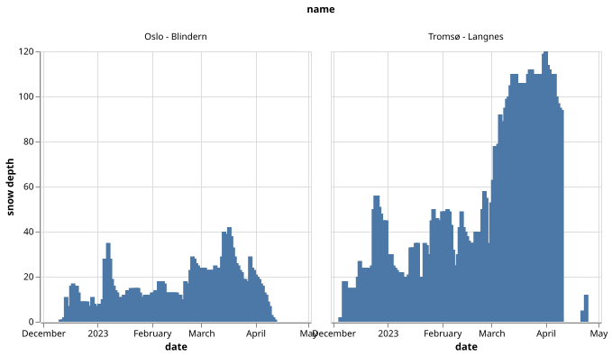
Snow depth (in cm) for the months December 2022 to May 2023 for two cities in Norway.
What happens if we try to color the plot by the “max temperature” values?
alt.Chart(data).mark_bar().encode(
x="date",
y="snow depth",
color="max temperature",
column="name",
)
The result looks neat:

Snow depth (in cm) for the months December 2022 to May 2023 for two cities in Norway. Colored by daily max temperature.
We can change the color scheme (available color schemes):
alt.Chart(data).mark_bar().encode(
x="date",
y="snow depth",
color=alt.Color("max temperature").scale(scheme="plasma"),
column="name",
)
With the following result:
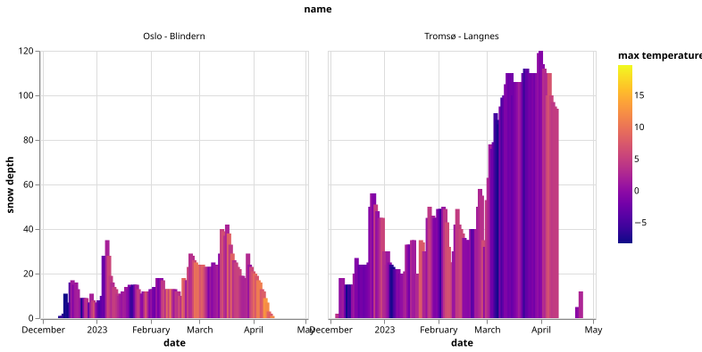
Snow depth (in cm) for the months December 2022 to May 2023 for two cities in Norway. Colored by daily max temperature. Warmer days are often followed by reduced snow depth.
Exercise: Anscombe’s quartet
Save the following data as example.csv (you can do this directly from
JupyterLab; this data is the Anscombe’s
quartet):
dataset,x,y
I,10.0,8.04
I,8.0,6.95
I,13.0,7.58
I,9.0,8.81
I,11.0,8.33
I,14.0,9.96
I,6.0,7.24
I,4.0,4.26
I,12.0,10.84
I,7.0,4.82
I,5.0,5.68
II,10.0,9.14
II,8.0,8.14
II,13.0,8.74
II,9.0,8.77
II,11.0,9.26
II,14.0,8.1
II,6.0,6.13
II,4.0,3.1
II,12.0,9.13
II,7.0,7.26
II,5.0,4.74
III,10.0,7.46
III,8.0,6.77
III,13.0,12.74
III,9.0,7.11
III,11.0,7.81
III,14.0,8.84
III,6.0,6.08
III,4.0,5.39
III,12.0,8.15
III,7.0,6.42
III,5.0,5.73
IV,8.0,6.58
IV,8.0,5.76
IV,8.0,7.71
IV,8.0,8.84
IV,8.0,8.47
IV,8.0,7.04
IV,8.0,5.25
IV,19.0,12.5
IV,8.0,5.56
IV,8.0,7.91
IV,8.0,6.89
Exercise Pandas-2: read and plot a CSV file
Save the above CSV file to disk as
example.csvin the same folder where you run JupyterLab. We recommend to create the file in the JupyterLab interface.Plot the data but instead of
mark_bar, usemark_point.Your goal is to arrive at four plots for the four data sets, all side by side.
If you have time, try to customize the plot.
Solution
# we don't need to import again but just in case you started here
import pandas as pd
data = pd.read_csv("example.csv")
alt.Chart(data).mark_point().encode(
x="x",
y="y",
color="dataset",
column="dataset",
)
Where to learn more about pandas
Pandas is extremely powerful and there is a lot that can be done and there are great resources to explore more:
Getting started guide (including tutorials and a 10 minute flash intro)
Data Carpentry lesson “Data Analysis and Visualization in Python for Ecologists” (useful not only for ecologists)
Keypoints
Pandas dataframes are a good data structure for tabular data.
Dataframes allow both simple and advanced analysis in very compact form.
Some visualization libraries (such as Vega-Altair) interface very nicely with pandas dataframes.
Tidy data and dealing with messy data
Objectives
Knowing about different storage formats
Knowing about the tidy data format
Be able to reformat tabular data into the tidy data format
Instructor note
25 min motivation/discussion/demo
In the previous episode we read data from nicely formatted “plain” text files. But sometimes the data is in a spreadsheet or in less nicely formatted text files. In this episode we will discuss strategies for how to work with these.
Importing data from spreadsheets
We will create a spreadsheet with the following content (only columns A and B; the actual content does not have to be exactly the same):

Example spreadsheet with a side note.
Copy this also to the second sheet and for demonstration purpose add some side-notes to the second sheet and also color one or two cells (some people like to give some meaning to cells using color).
Save the spreadsheet as experiment.xls.
Now we will together try to read and inspect both sheets in the Jupyter Notebook:
import pandas as pd
data = pd.read_excel('experiment.xls', sheet_name="Sheet1")
data
data = pd.read_excel('experiment.xls', sheet_name="Sheet2")
data
Discussion
We can import data from spreadsheets (more documentation)!
“Side notes” in spreadsheets can be annoying in this context.
Also encoding data in cell colors is a problem now. We will avoid those in future.
Tidy data
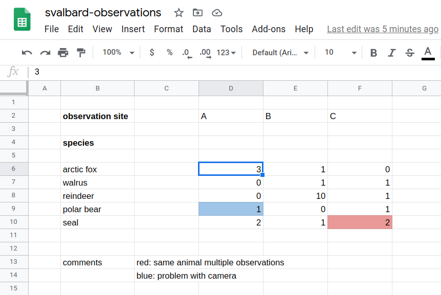
Example spreadsheet (this is a phantasy dataset, apologies to biology students/researchers - this is not my domain).
What is the problem with storing data like this?
Format: Limited interoperability with other programs
Error prone (see e.g. this famous example)
Difficult to parse (“understand”) by scripts: difficult to automate
Not in tidy format: difficult to extend/modify
How should we arrange the data?

Attempt 1: Not great since we need to somehow divide at the comma. How should we deal with multiple sightings?

Attempt 2: Adding observation sites will force us to add columns.
{kind=link}
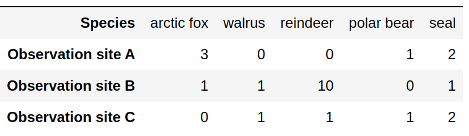
Attempt 3: Adding species will force us to add columns.

Tidy data format: Columns are variables, rows are observations/measurements. Easy to add new species and sites.
Tidy data format
Columns are variables
Rows are observations/measurements
“Long form”
Order does not matter
Easy to extend with more species and more sites without modifying the code
Structure for storing data - this does not mean that this is ideal for tables in presentations or publications
Standard formats
Species,Observation site,Number of sightings
arctic fox,A,3
arctic fox,B,1
walrus,B,1
walrus,C,1
reindeer,B,10
reindeer,C,1
polar bear,A,1
polar bear,C,1
seal,A,2
seal,B,1
seal,C,2
Data cleaning
Often we want to visualize data sets with inconsistent or missing entries:
Date,Organization,Number of participants
2020-09-27,UiT,20
Oct 10 2020,UiT Norges arktiske universitet,15
"Nov. 11, 2020",UiT The Arctic University of Norway,40
2020-12-12,UiT The Arctic University of Norway,-
Data cleaning is a bit outside the scope of this course (although we have done some of this in the pandas episode) but still good to know:
There are tools to clean and merge inconsistent data sets (e.g. OpenRefine, see also this Data Carpentry lesson)
This does not have to be done manually
Reading data that is not in CSV format
Now we know that storing data in standard formats can be convenient and we know about the tidy data format but sometimes we don’t have control over this: we may get a text file from another program or an instrument and now we are expected to deal with it.
As an example, we got two text files from two different instruments. We wish to extract all frequencies and all intensities into two lists.
This is one, example1.txt:
result from instrument: R2-D2
------------------------------------------
measurement frequency intensity
* 1 0.01 0.01
* 2 0.02 0.02
* 3 0.03 0.01
* 4 0.04 0.10
* 5 0.05 0.20
* 6 0.06 0.12
* 7 0.07 0.07
* 8 0.08 0.02
* 9 0.09 0.01
* 10 0.10 0.01
==========================================
timestamp: Sat Mar 27 03:30:34 PM CET 2021
And here is the other one, example2.txt:
result from instrument: C-3PO
=============================
numbers we want: 10
0.01 0.01
0.02 0.02
0.03 0.01
0.04 0.10
0.05 0.20
0.06 0.12
0.07 0.07
0.08 0.02
0.09 0.01
0.10 0.01
unrelated numbers:
1.23 4.56
7.89 0.12
At the end we want the code to produce these two lists:
frequencies = [0.01, 0.02, 0.03, 0.04, 0.05, 0.06, 0.07, 0.08, 0.09, 0.1]
intensities = [0.01, 0.02, 0.01, 0.1, 0.2, 0.12, 0.07, 0.02, 0.01, 0.01]
Discussion
Before we discuss possible solutions, it can be a good exercise to describe in words what the code should do to extract the numbers.
Below you find possible solutions for these two examples. These are designed to be somehow understandable (which does not mean that the code is trivial) and are not as short and as elegant as they could be. One way to make them more elegant would be to use regular expressions.
One solution for example1.txt:
def read_data(file_name):
# we start with empty lists
frequencies = []
intensities = []
# open the file with read permissions
with open(file_name, "r") as f:
# iterate over all lines in the file object "f"
for line in f:
# we are only interested in lines that start with "*"
if line.startswith("*"):
# we split the line on "whitespace"
# the "_" means we are not interested in the first two entries
_, _, frequency, intensity = line.split()
# add the new numbers to the lists
# we convert from string to float
frequencies.append(float(frequency))
intensities.append(float(intensity))
# function returns the result
return frequencies, intensities
# here we are outside the function
frequencies, intensities = read_data("example1.txt")
print(frequencies)
print(intensities)
One solution for example2.txt.
def read_data(file_name):
# we start with empty lists
frequencies = []
intensities = []
# open the file with read permissions
with open(file_name, "r") as f:
# iterate over all lines in the file object "f"
for line in f:
# we are only interested in lines that start with "*"
if "numbers we want" in line:
# we split the line on "whitespace"
words = line.split()
# we are only interested in the last element
# -1 means last element in that list
last_element = words[-1]
# convert from string to int
num_measurements = int(last_element)
# now we know the next 10 lines are the interesting ones
# range(10) produces a list with 10 elements: [0, 1, 2, 3, 4, 5, 6, 7, 8, 9]
# we use it to iterate exactly 10 times
for _ in range(num_measurements):
# this advances f by one and we get one line at a time
next_line = next(f)
words = next_line.split()
frequency = float(words[0])
intensity = float(words[1])
# add the new numbers to the lists
frequencies.append(frequency)
intensities.append(intensity)
# function returns the result
return frequencies, intensities
# here we are outside the function
frequencies, intensities = read_data("example2.txt")
print(frequencies)
print(intensities)
Customizing plots
Objectives
Know where to look to find out how to tweak plots
Be able to prepare a plot for publication
Know how to tweak example plots from a gallery for your own purpose
Start with a relatively simple example and build up more and more features
We will build up this notebook (spoiler alert!)
[this lesson is adapted from https://aaltoscicomp.github.io/python-for-scicomp/data-visualization/]
Styling and customizing plots
Before you customize plots “manually” using a graphical program, please consider how this affects reproducibility.
Try to minimize manual post-processing. This might bite you when you need to regenerate 50 figures one day before submission deadline or regenerate a set of figures after the person who created them left the group.
All the plotting libraries in Python allow to customize almost every aspect of a plot.
Starting point
This is where we left off at the end of Generating our first plot:
# import necessary libraries
import altair as alt
import pandas as pd
# read the data
url_prefix = "https://raw.githubusercontent.com/plotly/datasets/master/"
data = pd.read_csv(url_prefix + "gapminder_with_codes.csv")
# generate an interactive plot
alt.Chart(data).mark_point().encode(
x=alt.X("gdpPercap").scale(type="log").title("GDP per capita (PPP dollars)"),
y=alt.Y("lifeExp").title("Life expectancy (years)"),
color="continent",
).transform_filter(alt.datum.year == 2007).interactive()
Our example plot at the end of Generating our first plot.
Title and axis values
In the next step we modify a number of things:
Add figure title
Modify axis domains to “zoom into” the interesting part of the plot
Set axis values
Change from
mark_point()tomark_circle()Invoke
interactive()in a separate step
chart = (
alt.Chart(
data,
title=alt.Title("Life expectancy as function of the gross domestic product"),
)
.mark_circle()
.encode(
x=alt.X("gdpPercap", axis=alt.Axis(values=[100, 1000, 10000, 100000]))
.scale(type="log", domain=(200, 100000))
.title("GDP per capita (PPP dollars)"),
y=alt.Y("lifeExp", axis=alt.Axis(values=[20, 30, 40, 50, 60, 70, 80]))
.title("Life expectancy (years)")
.scale(domain=(20, 85)),
color="continent",
)
.transform_filter(alt.datum.year == 2007)
)
chart.interactive()
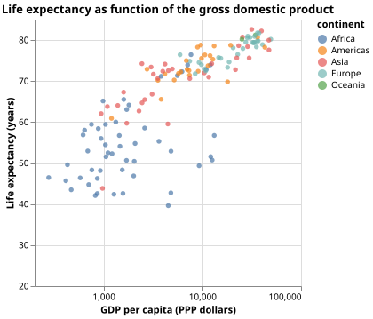
The plot is starting to look better!
Colors
In the next step we change the color scheme (list of all schemes), make the circles larger and slightly transparent:
chart = (
alt.Chart(
data,
title=alt.Title("Life expectancy as function of the gross domestic product"),
)
.mark_circle(opacity=0.8, size=100.0)
.encode(
x=alt.X("gdpPercap", axis=alt.Axis(values=[100, 1000, 10000, 100000]))
.scale(type="log", domain=(200, 100000))
.title("GDP per capita (PPP dollars)"),
y=alt.Y("lifeExp", axis=alt.Axis(values=[20, 30, 40, 50, 60, 70, 80]))
.title("Life expectancy (years)")
.scale(domain=(20, 85)),
color=alt.Color("continent").scale(scheme="dark2"),
)
.transform_filter(alt.datum.year == 2007)
)
chart.interactive()
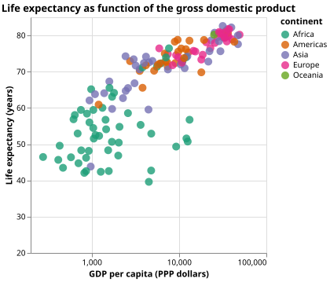
The plot after adjusting circles and colors.
We can also define own colors:
okabe_ito = [
"#0072b2",
"#e69f00",
"#cc79a7",
"#009e73",
"#f0e442",
"#000000",
"#d55e00",
"#56b4e9",
]
chart = (
alt.Chart(
data,
title=alt.Title("Life expectancy as function of the gross domestic product"),
)
.mark_circle(opacity=0.8, size=100.0)
.encode(
x=alt.X("gdpPercap", axis=alt.Axis(values=[100, 1000, 10000, 100000]))
.scale(type="log", domain=(200, 100000))
.title("GDP per capita (PPP dollars)"),
y=alt.Y("lifeExp", axis=alt.Axis(values=[20, 30, 40, 50, 60, 70, 80]))
.title("Life expectancy (years)")
.scale(domain=(20, 85)),
color=alt.Color("continent").scale(range=okabe_ito),
)
.transform_filter(alt.datum.year == 2007)
)
chart.interactive()
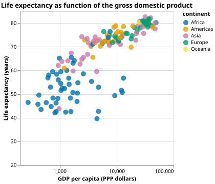
Adjusting colors to those recommended by Okabe and Ito.
Why these colors?
This qualitative color palette is opimized for all color-vision deficiencies, see https://clauswilke.com/dataviz/color-pitfalls.html and Okabe, M., and K. Ito. 2008. “Color Universal Design (CUD): How to Make Figures and Presentations That Are Friendly to Colorblind People.”.
More tweaking towards a publication-ready figure
Let us add a subtitle and adjust sizing and positioning:
chart = (
alt.Chart(
data,
title=alt.Title(
"Life expectancy as function of the gross domestic product",
subtitle=[
"Gross domestic product (GDP) per capita measures the value of everything",
"produced in a country during a year, divided by the number of people.",
"The unit is in purchasing power parities (PPP dollars), fixed to 2017 prices.",
"Data is adjusted for inflation and differences in the cost of living between countries.",
],
),
)
.mark_circle(opacity=0.8, size=100.0)
.encode(
x=alt.X("gdpPercap", axis=alt.Axis(values=[100, 1000, 10000, 100000]))
.scale(type="log", domain=(200, 100000))
.title("GDP per capita (PPP dollars)"),
y=alt.Y("lifeExp", axis=alt.Axis(values=[20, 30, 40, 50, 60, 70, 80]))
.title("Life expectancy (years)")
.scale(domain=(20, 85)),
color=alt.Color("continent").scale(range=okabe_ito),
)
.transform_filter(alt.datum.year == 2007)
)
chart = chart.configure_axis(labelFontSize=20, titleFontSize=20)
chart = chart.properties(width=600, height=500)
chart = chart.configure_title(
fontSize=20,
subtitleFontSize=20,
anchor="start",
orient="bottom",
offset=20,
subtitleColor="gray",
)
chart = chart.configure_legend(
titleFontSize=20,
labelFontSize=20,
padding=10,
)
chart.interactive()
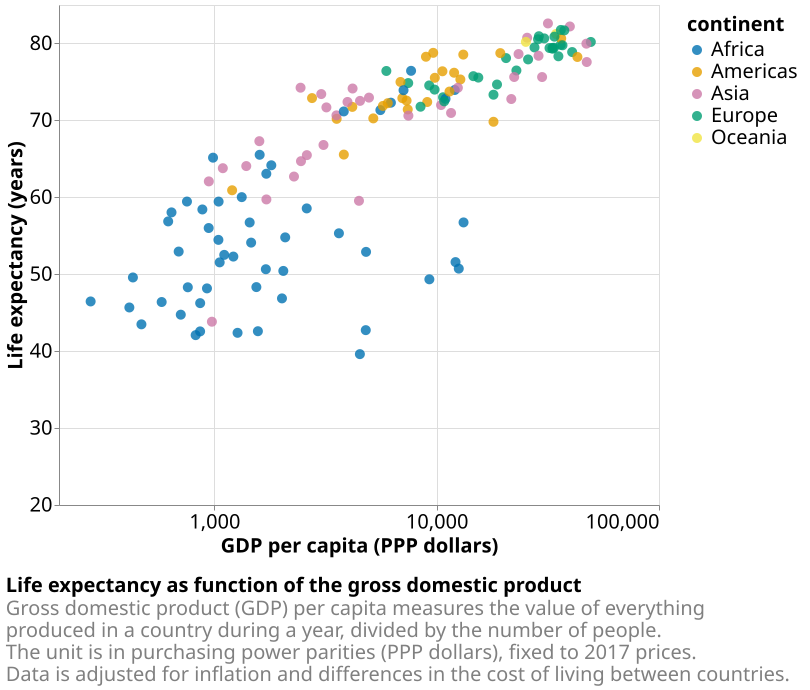
Interactive charts
With not too many changes we can make the chart interactive and add a slider for the year (please try this in this notebook):
year_slider = alt.binding_range(min=1952, max=2007, step=5, name="Year")
slider_selection = alt.selection_point(bind=year_slider, fields=["year"], value=2007)
chart = (
alt.Chart(
data,
title=alt.Title(
"How life expectancy and gross domestic product evolved over time",
subtitle=[
"Gross domestic product (GDP) per capita measures the value of everything",
"produced in a country during a year, divided by the number of people.",
"The unit is in purchasing power parities (PPP dollars), fixed to 2017 prices.",
"Data is adjusted for inflation and differences in the cost of living between countries.",
],
),
)
.mark_circle(opacity=0.8, size=100.0)
.encode(
x=alt.X("gdpPercap", axis=alt.Axis(values=[100, 1000, 10000, 100000]))
.scale(type="log", domain=(200, 100000))
.title("GDP per capita (PPP dollars)"),
y=alt.Y("lifeExp", axis=alt.Axis(values=[20, 30, 40, 50, 60, 70, 80]))
.title("Life expectancy (years)")
.scale(domain=(20, 85)),
color=alt.Color("continent").scale(range=okabe_ito),
)
.add_params(slider_selection)
.transform_filter(slider_selection)
)
chart = chart.configure_axis(labelFontSize=20, titleFontSize=20)
chart = chart.properties(width=600, height=500)
chart = chart.configure_title(
fontSize=20,
subtitleFontSize=20,
anchor="start",
orient="bottom",
offset=20,
subtitleColor="gray",
)
chart = chart.configure_legend(
titleFontSize=20,
labelFontSize=20,
padding=10,
)
chart.interactive()
Adding more annotation
With few more lines we can add extra annotation that can help to highlight certain aspects of the plot and to tell a story:
year_slider = alt.binding_range(min=1952, max=2007, step=5, name="Year")
slider_selection = alt.selection_point(bind=year_slider, fields=["year"], value=2007)
chart = (
alt.Chart(
data,
title=alt.Title(
"How life expectancy and gross domestic product evolved over time",
subtitle=[
"Gross domestic product (GDP) per capita measures the value of everything",
"produced in a country during a year, divided by the number of people.",
"The unit is in purchasing power parities (PPP dollars), fixed to 2017 prices.",
"Data is adjusted for inflation and differences in the cost of living between countries.",
],
),
)
.mark_circle(opacity=0.8, size=100.0)
.encode(
x=alt.X("gdpPercap", axis=alt.Axis(values=[100, 1000, 10000, 100000]))
.scale(type="log", domain=(200, 100000))
.title("GDP per capita (PPP dollars)"),
y=alt.Y("lifeExp", axis=alt.Axis(values=[20, 30, 40, 50, 60, 70, 80]))
.title("Life expectancy (years)")
.scale(domain=(20, 85)),
color=alt.Color("continent").scale(range=okabe_ito),
)
.add_params(slider_selection)
.transform_filter(slider_selection)
)
annotation = (
alt.Chart(data)
.encode(
x="gdpPercap",
y="lifeExp",
text="country",
color=alt.value("black"),
)
.transform_filter((slider_selection) & (alt.datum.country == "Norway"))
)
chart = (
chart
+ annotation.mark_point(size=100.0)
+ annotation.mark_text(size=15, xOffset=10, align="left", baseline="middle")
)
chart = chart.configure_axis(labelFontSize=20, titleFontSize=20)
chart = chart.properties(width=600, height=500)
chart = chart.configure_title(
fontSize=20,
subtitleFontSize=20,
anchor="start",
orient="bottom",
offset=20,
subtitleColor="gray",
)
chart = chart.configure_legend(
titleFontSize=20,
labelFontSize=20,
padding=10,
)
chart.interactive()
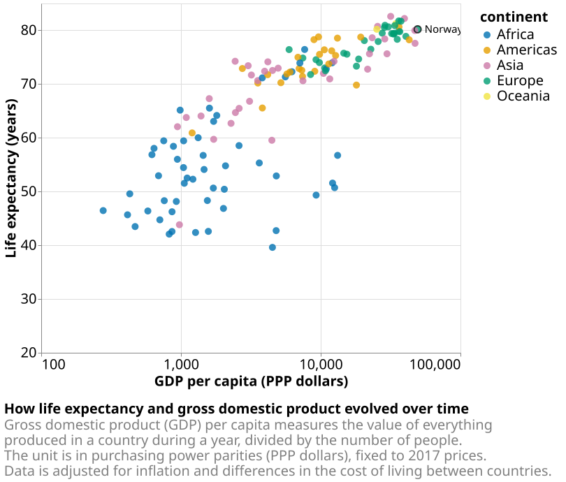
Saving the chart as web page
You can save the chart as a web site and try to open it in a separate browser tab and put it on your home page or research group website:
chart.save("chart.html")
Themes
In Vega-Altair you can change the theme and select from a long list of themes. On top of your notebook try to add:
alt.themes.enable('dark')
Then re-run all cells. Later you can try some other themes such as:
fivethirtyeightlatimesurbaninstitute
You can even define your own themes!
Exercise
In this exercise we can try to adapt existing scripts to either tweak how the plot looks or to modify the input data. This is very close to real life: there are so many options and possibilities and it is almost impossible to remember everything so this strategy is useful to practice:
Select an example that is close to what you have in mind
Being able to adapt it to your needs
Being able to search for help
Being able to understand help request answers (not easy)
Exercise Customization-1: Adapting a gallery example
This is a great exercise which is very close to real life.
Browse the Vega-Altair example gallery.
Select one example that is close to your current/recent visualization project or simply interests you.
First try to reproduce this example, as-is, in the Jupyter Notebook.
Then try to print out the data that is used in this example just before the call of the plotting function to learn about its structure.
Then try to modify the data a bit.
If you have time, try to feed it different, simplified data. This will be key for adapting the examples to your projects.
Discussion
After the exercises, the group can discuss their findings and it is important to clarify questions at this point before moving on.
Keypoints
Think about color-vision deficiencies when choosing colors. Use existing solutions for this problem.
Sharing notebooks
Objectives
Know about good practices for notebooks to make them reusable
Have a recipe to share a dynamic and reproducible visualization pipeline
Instructor note
20 min presentation and discussion
[this lesson is adapted from https://coderefinery.github.io/jupyter/sharing/]
Document dependencies
If you import libraries into your notebook, note down their versions.
It is customary to do this either in a requirements.txt file (example):
pandas==2.1.1
altair==5.1.2
… or in an environment.yml file (example):
name: example-environment
channels:
- conda-forge
dependencies:
- pandas=2.1.1
- altair=5.1.2
Place either requirements.txt or environment.yml in the same folder as the notebook(s).
This is not only useful for people who will try to rerun this in future, it is also understood by some tools (e.g. Binder) which we will see later.
Sharing dynamic notebooks using Binder
Exercise/demo: Making your notebooks reproducible by anyone (15 min)
Instructor demonstrates this:
Instructor creates a GitHub repository.
Uploads a notebook file that we created in earlier episodes.
Then we look at the statically rendered version of the notebook on GitHub and also nbviewer.
Add a file
requirements.txtwhich contains:pandas==2.1.1 altair==5.1.2
Visit https://mybinder.org:

Check that your notebook repository now has a “launch binder” badge in your
README.mdfile on GitHub.Try clicking the button and see how your repository is launched on Binder (can take a minute or two). Your notebooks can now be expored and executed in the cloud.
Enjoy being fully reproducible!
How to get a digital object identifier (DOI)
Zenodo is a great service to get a DOI for a notebook (but first practice with the Zenodo sandbox).
Binder can also run notebooks from Zenodo.
In the supporting information of your paper you can refer to its DOI.
Introduction to Matplotlib
[this lesson is adapted from https://aaltoscicomp.github.io/python-for-scicomp/data-visualization/]
Why Matplotlib?
Matplotlib is perhaps the most popular Python plotting library.
Many libraries build on top of Matplotlib (example: Seaborn).
MATLAB users will feel familiar.
Even if you choose to use another library, chances are high that you need to adapt a Matplotlib plot of somebody else.
Libraries that are built on top of Matplotlib may need knowledge of Matplotlib for custom adjustments.
However it is a relatively low-level interface for drawing (in terms of abstractions, not in terms of quality) and does not provide statistical functions. Some figures require typing and tweaking many lines of code.
Many other visualization libraries exist with their own strengths, it is also a matter of personal preferences.
Getting started with Matplotlib
We can start in a Jupyter Notebook since notebooks are typically a good fit for data visualizations. But if you prefer to run this as a script, this is also OK.
Let us create our first plot using
subplots(),
scatter, and some other methods on the
Axes object:
import matplotlib.pyplot as plt
# this is dataset 1 from
# https://en.wikipedia.org/wiki/Anscombe%27s_quartet
data_x = [10.0, 8.0, 13.0, 9.0, 11.0, 14.0, 6.0, 4.0, 12.0, 7.0, 5.0]
data_y = [8.04, 6.95, 7.58, 8.81, 8.33, 9.96, 7.24, 4.26, 10.84, 4.82, 5.68]
fig, ax = plt.subplots()
ax.scatter(x=data_x, y=data_y, c="#E69F00")
ax.set_xlabel("we should label the x axis")
ax.set_ylabel("we should label the y axis")
ax.set_title("some title")
# uncomment the next line if you would like to save the figure to disk
# fig.savefig("my-first-plot.png")
{kind=link}
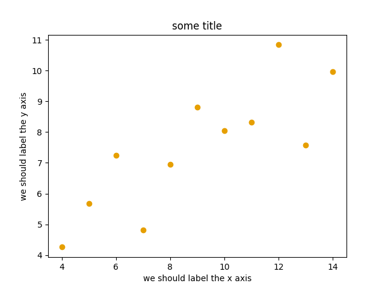
This is the result of our first plot.
When running a Matplotlib script on a remote server without a
“display” (e.g. compute cluster), you may need to add the
matplotlib.use call:
import matplotlib.pyplot as plt
matplotlib.use("Agg")
# ... rest of the script
Exercise: First plot
Exercise Matplotlib-1: extend the previous example (15 min)
Extend the previous plot by also plotting this set of values but this time using a different color (
#56B4E9):# this is dataset 2 data2_y = [9.14, 8.14, 8.74, 8.77, 9.26, 8.10, 6.13, 3.10, 9.13, 7.26, 4.74]
Then add another color (
#009E73) which plots the second dataset, scaled by 2.0.# here we multiply all elements of data2_y by 2.0 data2_y_scaled = [y * 2.0 for y in data2_y]
Try to add a legend to the plot with
matplotlib.axes.Axes.legend()and searching the web for clues on how to add labels to each dataset. You can also consult this great quick start guide.At the end it should look like this one:

Experiment also by using named colors (e.g. “red”) instead of the hex-codes.
Solution
import matplotlib.pyplot as plt
# this is dataset 1 from
# https://en.wikipedia.org/wiki/Anscombe%27s_quartet
data_x = [10.0, 8.0, 13.0, 9.0, 11.0, 14.0, 6.0, 4.0, 12.0, 7.0, 5.0]
data_y = [8.04, 6.95, 7.58, 8.81, 8.33, 9.96, 7.24, 4.26, 10.84, 4.82, 5.68]
# this is dataset 2
data2_y = [9.14, 8.14, 8.74, 8.77, 9.26, 8.10, 6.13, 3.10, 9.13, 7.26, 4.74]
# here we multiply all elements of data2_y by 2.0
data2_y_scaled = [y * 2.0 for y in data2_y]
fig, ax = plt.subplots()
ax.scatter(x=data_x, y=data_y, c="#E69F00", label="set 1")
ax.scatter(x=data_x, y=data2_y, c="#56B4E9", label="set 2")
ax.scatter(x=data_x, y=data2_y_scaled, c="#009E73", label="set 2 (scaled)")
ax.set_xlabel("we should label the x axis")
ax.set_ylabel("we should label the y axis")
ax.set_title("some title")
ax.legend()
# uncomment the next line if you would like to save the figure to disk
# fig.savefig("exercise-plot.png")
Why these colors?
This qualitative color palette is opimized for all color-vision deficiencies, see https://clauswilke.com/dataviz/color-pitfalls.html and Okabe, M., and K. Ito. 2008. “Color Universal Design (CUD): How to Make Figures and Presentations That Are Friendly to Colorblind People”.
Matplotlib has two different interfaces
When plotting with Matplotlib, it is useful to know and understand that there are two approaches even though the reasons of this dual approach is outside the scope of this lesson.
The more modern option is an object-oriented interface or explicit interface (the
figandaxobjects can be configured separately and passed around to functions):import matplotlib.pyplot as plt # this is dataset 1 from # https://en.wikipedia.org/wiki/Anscombe%27s_quartet data_x = [10.0, 8.0, 13.0, 9.0, 11.0, 14.0, 6.0, 4.0, 12.0, 7.0, 5.0] data_y = [8.04, 6.95, 7.58, 8.81, 8.33, 9.96, 7.24, 4.26, 10.84, 4.82, 5.68] fig, ax = plt.subplots() ax.scatter(x=data_x, y=data_y, c="#E69F00") ax.set_xlabel("we should label the x axis") ax.set_ylabel("we should label the y axis") ax.set_title("some title")
The more traditional option mimics MATLAB plotting and uses the pyplot interface or implicit interface (
pltcarries the global settings):import matplotlib.pyplot as plt # this is dataset 1 from # https://en.wikipedia.org/wiki/Anscombe%27s_quartet data_x = [10.0, 8.0, 13.0, 9.0, 11.0, 14.0, 6.0, 4.0, 12.0, 7.0, 5.0] data_y = [8.04, 6.95, 7.58, 8.81, 8.33, 9.96, 7.24, 4.26, 10.84, 4.82, 5.68] plt.scatter(x=data_x, y=data_y, c="#E69F00") plt.xlabel("we should label the x axis") plt.ylabel("we should label the y axis") plt.title("some title")
When searching for help on the internet, you will find both approaches, they can also be mixed. Although the pyplot interface looks more compact, we recommend to learn and use the object oriented interface.
Why do we emphasize this?
One day you may want to write functions which wrap
around Matplotlib function calls and then you can send Figure and Axes
into these functions and there is less risk that adjusting figures changes
settings also for unrelated figures created in other functions.
When using the pyplot interface, settings are modified for the entire
matplotlib.pyplot package. The latter is acceptable for simple scripts but may yield
surprising results when introducing functions to enhance/abstract Matplotlib
calls.
Styling and customizing plots
Before you customize plots “manually” using a graphical program, please consider how this affects reproducibility.
Try to minimize manual post-processing. This might bite you when you need to regenerate 50 figures one day before submission deadline or regenerate a set of figures after the person who created them left the group.
Matplotlib and also all the other libraries allow to customize almost every aspect of a plot.
It is useful to study Matplotlib parts of a figure so that we know what to search for to customize things.
Matplotlib cheatsheets: https://github.com/matplotlib/cheatsheets
You can also select among pre-defined themes/ style sheets with
use, for instance:plt.style.use('ggplot')
Exercises: Styling and customization
Exercise Customization-1: log scale in Matplotlib (15 min)
In this exercise we will learn how to use log scales.
To demonstrate this we first fetch some data to plot:
import pandas as pd url = ( "https://raw.githubusercontent.com/plotly/datasets/master/gapminder_with_codes.csv" ) gapminder_data = pd.read_csv(url).query("year == 2007") gapminder_data
Try the above snippet in a notebook and it will give you an overview over the data.
Then we can plot the data, first using a linear scale:
import matplotlib.pyplot as plt fig, ax = plt.subplots() ax.scatter(x=gapminder_data["gdpPercap"], y=gapminder_data["lifeExp"], alpha=0.5) ax.set_xlabel("GDP per capita (PPP dollars)") ax.set_ylabel("Life expectancy (years)")
This is the result but we realize that a linear scale is not ideal here:
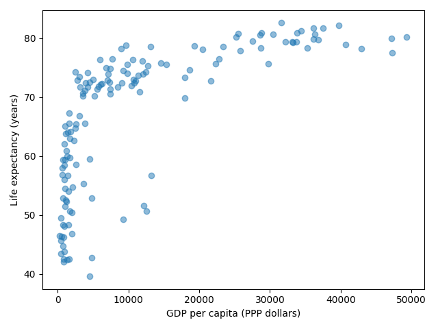
Your task is to switch to a log scale and arrive at this result:

What does
alpha=0.5do?
Solution
See ax.set_xscale().
fig, ax = plt.subplots()
ax.scatter(x=gapminder_data["gdpPercap"], y=gapminder_data["lifeExp"], alpha=0.5)
ax.set_xscale("log")
ax.set_xlabel("GDP per capita (PPP dollars)")
ax.set_ylabel("Life expectancy (years)")
alphasets transparency of points.
Exercise Customization-2: preparing a plot for publication (15 min)
Often we need to create figures for presentation slides and for publications but both have different requirements: for presentation slides you have the whole screen but for a figure in a publication you may only have few centimeters/inches.
For figures that go to print it is good practice to look at them at the size they will be printed in and then often fonts and tickmarks are too small.
Your task is to make the tickmarks and the axis label font larger, using Matplotlib parts of a figure and web search, and to arrive at this:

Solution
See ax.tick_params.
fig, ax = plt.subplots()
ax.scatter(x="gdpPercap", y="lifeExp", alpha=0.5, data=gapminder_data)
ax.set_xscale("log")
ax.set_xlabel("GDP per capita (PPP dollars)", fontsize=15)
ax.set_ylabel("Life expectancy (years)", fontsize=15)
ax.tick_params(which="major", length=10)
ax.tick_params(which="minor", length=5)
ax.tick_params(labelsize=15)
Matplotlib and pandas DataFrames
In the above exercises we have sent individual columns of the gapminder_data DataFrame
into ax.scatter() like this:
fig, ax = plt.subplots()
ax.scatter(x=gapminder_data["gdpPercap"], y=gapminder_data["lifeExp"], alpha=0.5)
It is possible to do this instead and let Matplotlib “unpack” the columns:
fig, ax = plt.subplots()
ax.scatter(x="gdpPercap", y="lifeExp", alpha=0.5, data=gapminder_data)
Other input types are possible. See Types of inputs to plotting functions.
Software install instructions
Packages that we will need
In this course we will need Python 3 and the following Python libraries/packages:
jupyterlab
altair
pandas (comes with altair)
vega_datasets (optional)
numpy (optional)
matplotlib (optional)
How to install Python and the packages
If you are used to installing Python packages, you can use your preferred installation method. However, we recommend to not install these system-wide and never to install using administrator privileges.
If you are unsure or the first time installing Python and Python packages we recommend to install Anaconda which will give you a Python 3 environment and almost all the above required packages. Once you have installed Anaconda, create a new environment and install altair into it.
Finally, please verify the installation (below).
How to verify your installation
Open the Anaconda Navigator.
Find the JupyterLab tile and “launch” it.
If you are on Linux or macOS, you can open JupyterLab from the terminal by typing jupyter-lab.
It will hopefully open up your browser and look like this:

JupyterLab opened in the browser. Click on the Python 3 tile.
Once you clicked the Python 3 tile it should look like this:

Python 3 notebook started.
Into that blue “cell” please type the following:
import altair
import pandas
print("all good - ready for the course")
{kind=link}
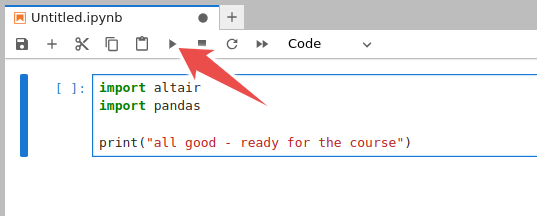
Please copy these lines and click on the “play”/”run” icon.
This is how it should look:
{kind=link}
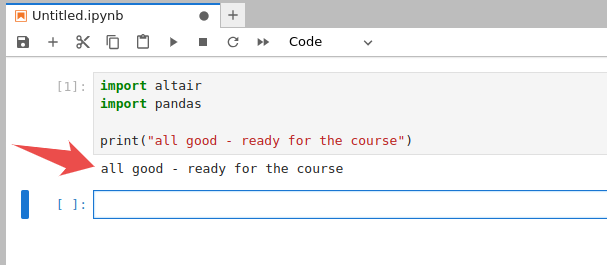
Screenshot after successful import.
If this worked, you are all set and can close JupyterLab (no need to save these changes).
This is how it should not look:

Error: required packages could not be found.
Going through the course using Google Colab
It is possible to go through the workshop examples using Google Colab.
However you may need the following cell on top of your notebook:
import altair as alt
# this is here for google colab to update altair
if not alt.__version__.startswith("5"):
%pip install altair==5.1.2
And then you may need to click on “Runtime” -> “Run all” -> “Runtime” -> “Restart runtime”.
Example notebooks
Generating our first plot


Reading and slicing data with pandas


Customizing plots


Credit
When preparing this lesson, we have reused these resources: